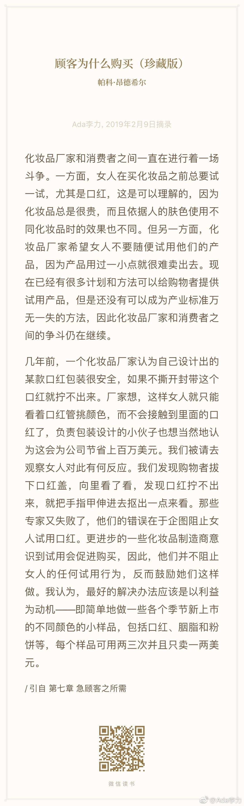

#创业# 《顾客为什么买》成书于1997年，正是北美线下零售业鼎盛时期，所以能发展出购物学。即使中国现在电商发展更迅速，购物学里的很多知识依然有用。
比如这段化妆品厂商跟用户试用之间的斗法，我们今天知道，像丝芙兰这样的化妆品专卖店是非常鼓励用户试用的。其实我现在都不能想象，化妆品公司怎么会想到这样的点子，把包装搞得让用户无法试用！？？
这个例子最好笑的地方就是女人要试用的天性是不能被阻挡的。
作者建议的小样方案已经成为行规。目前甚至已发展出小样学，精明的客户发现小样比正品划算得多，因而会和BA搞搞关系，争取免费获得一些小样。而这些本来只是用于营销试用非销售品的小样，也有半公开的交易市场。
总之，商家不要跟消费者天性对着干。
比如这段化妆品厂商跟用户试用之间的斗法，我们今天知道，像丝芙兰这样的化妆品专卖店是非常鼓励用户试用的。其实我现在都不能想象，化妆品公司怎么会想到这样的点子，把包装搞得让用户无法试用！？？
这个例子最好笑的地方就是女人要试用的天性是不能被阻挡的。
作者建议的小样方案已经成为行规。目前甚至已发展出小样学，精明的客户发现小样比正品划算得多，因而会和BA搞搞关系，争取免费获得一些小样。而这些本来只是用于营销试用非销售品的小样，也有半公开的交易市场。
总之，商家不要跟消费者天性对着干。
- 